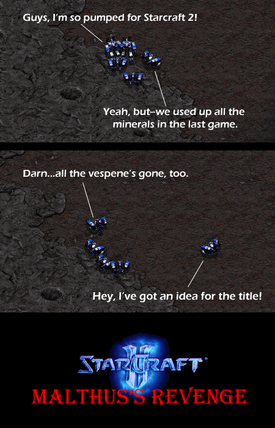

Comic JK 332
When I Feel Like It
⇤
<
?
>
⇥

⇤
<
?
>
⇥
Forum
.
RSS
.
Digg
.
Facebook
.
Reddit
.
Twitter
.
Stumbleupon
Enter your thoughts on number 332 here. Please, no spamming, trolling, or phreaking. Malthus', no? But nice idea... >According to wikipedia it is Malthus's (one s is only for ancient figures, eg Jesus) >>It's considered a bit of a gray area in grammar these days. The ' vs 's thing is kinda like who vs whom - it's nice when people get it right, but it's left to personal preference. >>>Both are valid grammatically. The only difference is in pronunciation. If you leave off the s you don't pronounce it (i.e. "Jesus' book" reads like "Jesus book" while "Jesus's" book reads like "Jesuses book"). ~K >>>>No, you pronounce the extra 's regardless of how you spell it. Nobody says "Jesus book." And you can write it either way, Malthus's or Malthus'. You know what SCII needs? Some unobtainium. >I prefer wonderflonium myself. >> Holy crap, you are my new favorite person. Dr. Horrible FTW >>Unobtanium is only found beneath huge, sacred trees. They are on a BARREN WORLD. No trees. >>...Or blue natives. >>>I really disliked it how that movie reused unobtainium. That had been used in 20+ other works of fiction! Why no originality? You Must Construct Additional Pylons! WE REQUIRE MORE VESPENE GAS I read ya, SIR! Z'that it? Problem: Out of minerals Solutions: Terrans - blow the crust off of the planet; Zerg - tunnel deeper, stupid!; Protoss - try thinking with portals. >So why couldn't the Protoss just warp minerals to them from planets that, you know, weren't the center of a massive war? >>So why couldn't the protoss actually just warp in 20 zealots at the very beginning of the game anyway? "we'll pay later!" with 10% interest it would be much more profitable for the protoss... Of course, technology would solve that. [Enter} show me the money [Enter} [Enter} power overwhelming [Enter] Turn down the suck people and move over to XKCD! >A lot of us go to both sites. XKCD is often great, but not always. JK comics is also often great, but not always. Between the two, it usually balances out decently >> You must be from INDIA